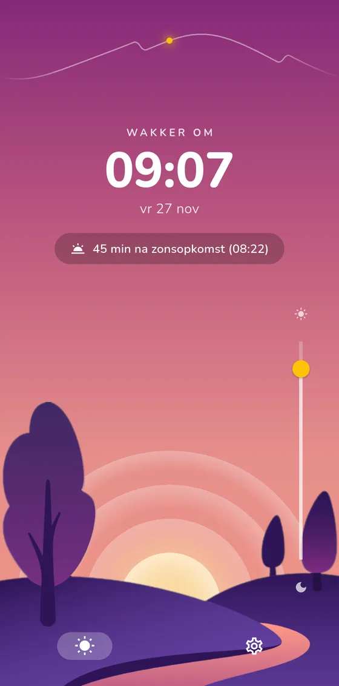

De zonsopkomst verschuift elke dag een beetje. Je wekker zou dat ook moeten doen. Wake at Sunrise berekent de zonsopkomst van morgen voor jouw precieze locatie en gaat precies dan af — of de minuten ervoor of erna die jou het beste uitkomen.

Hoe het werkt
De app moet weten waar op aarde je wakker wordt. Dat is het enige wat hij vraagt — en het blijft op je telefoon.
Laat de wekker precies bij zonsopkomst afgaan, of minuten ervoor of erna. Kies op welke dagen van de week de wekker aan staat.
Elke nacht richt de wekker zich ongemerkt opnieuw op de zonsopkomst van morgen. Terwijl de dageraad door het jaar verschuift, schuift jouw wektijd mee.
Functies
Eén taak — je wekken bij dageraad — zorgvuldig uitgevoerd.
Geen gemiddelde voor de stad — de werkelijke tijd van zonsopkomst waar je telefoon is, op het toestel berekend met astronomische wiskunde.
Geef aan hoeveel slaap je wilt en hoeveel tijd je nodig hebt om tot rust te komen. De app rekent terug vanaf de zonsopkomst van morgen en herinnert je er op tijd aan om naar bed te gaan.
Een grafiek van het verloop van de zonsopkomst over het hele jaar — met een stip op vandaag — zodat je weet waar je ochtenden naartoe gaan.
Gaat af over het vergrendelscherm, overleeft een herstart en kan het systeemvolume negeren, zodat een stille telefoon geen gemiste ochtend betekent.
Geen weerdienst, geen server. De zonsopkomst wordt lokaal berekend, dus de wekker werkt in de vliegtuigmodus en ver van de bewoonde wereld.
Volledig vertaald, met instelbare sluimerduur, volume en wekdagen.
Privacy
De enige noemenswaardige toestemming van de app is locatie — en die wordt voor precies één ding gebruikt: de zonsopkomst berekenen waar jij bent.
Vroege toegang
Wake at Sunrise begint binnenkort aan een gesloten bèta op Android. Word lid van de testersgroep en je krijgt de installatielink zodra die opengaat.
Word lid van de testersgroepGratis, je hoeft niets te kopen. Gebruik het Google-account waarmee je gaat installeren — zo weet Google Play dat het de app aan jou moet tonen.
Vroege toegang
Wake at Sunrise is in gesloten bèta op Android. Twee snelle stappen en hij is van jou — jouw feedback bepaalt de lancering.
Google Play moet je account op de lijst met testers hebben voordat het je de app laat zien. Al lid? Ga door naar stap 2.
Word lid van de groepOpen dit op de telefoon waarmee je gaat testen, ingelogd met datzelfde Google-account.
Open de test in Google PlayTesten is gratis en je hoeft niets te kopen. Houd de app een paar weken geïnstalleerd — Google telt het aantal testers dat onafgebroken meedoet voordat een nieuwe app live mag.
Downloaden
Wake at Sunrise staat in Google Play. Gratis, geen advertenties, geen account.
Download via Google PlayVroege toegang
Wake at Sunrise rondt een gesloten bèta op Android af. Wil je meedoen? Stuur een korte e-mail en je krijgt de link.
Vraag de bètalink aan